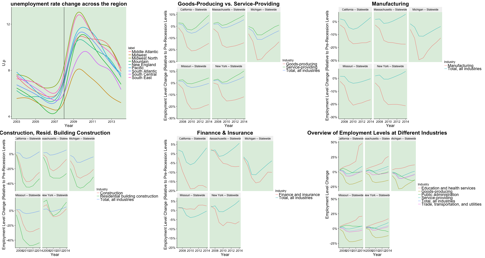
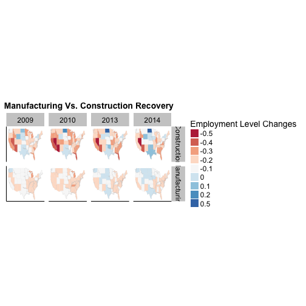

Team Citris (Sona, Ines, Sho, Jamie)
Which social group was negatively affected the most after 2008 crisis by unemployment rate
Bureau of Labor Statistics (BLS)
Main Variables to Investigate (2004-2014)
Methods
for (year in 1:11){for (i in 1:nrow(area_codes)){
state = area_codes[i, 2]
filename = paste("industry/", state, " ", years[year],".csv", sep = "")
data = read.file(filename)result = rbind(result, data) }}
Industry.data = Industry.data %>% left_join(Pre.Recession)
Ethnicity.Age = Demographics %>% filter(grepl("[years|over]$", Group))
Ethnicity.Age= Ethnicity.Age %>% mutate(Race = ifelse(grepl("^Hispanic", Group), "Hispanic", ifelse(grepl("^White", Group), "White", "Black")))
## Year State Industry Avg.EmpLvl Avg.Pay
## 1 2014 California -- Statewide Total, all industries 15809082 59042
## 2 2007 California -- Statewide Total, all industries 15640575 50538
## 3 2006 California -- Statewide Total, all industries 15503144 48345
## 4 2008 California -- Statewide Total, all industries 15494915 51487
## 5 2013 California -- Statewide Total, all industries 15378962 57111
## Pre.Recession.EmpLvl EmpLvl.change
## 1 15332732 0.031067506
## 2 15332732 0.020077488
## 3 15332732 0.011114245
## 4 15332732 0.010577551
## 5 15332732 0.003015102

